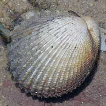
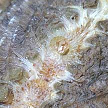
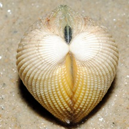
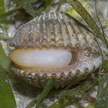
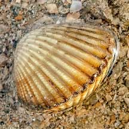

|
|
| bivalves text index | photo index |
| Phylum Mollusca > Class Bivalvia > Family Cardiidae |
| Large
cockle awaiting identification* Family Cardiidae updated May 2020 Where seen? This large cockle is sometimes seen on some of our shores, usually alone on sandy areas near seagrasses, coral rubble and reefs. Features: 5-6cm long. The two-part shell is thick and heavy, oval to rectangular and hemispherical (not flat). There are strong ribs sometimes with beads along the ribs. When submerged, a fringe of short tentacles may emerge from the shell opening. The clams grouped here are probably from different species. |
|
 Sentosa, Nov 09 |
 Sentosa, Nov 09 |
 |
*Species are difficult to positively identify without close examination.
On this website, they are grouped by external features for convenience of display.
| Large cockles on Singapore shores |
On wildsingapore
flickr
|
| Other sightings on Singapore shores |
 |
 Cyrene Reef, Aug 16 Photo shared by Marcus Ng on facebook. |
 Terumbu Raya, Aug 21 Photo shared by Vincent Choo on facebook. |